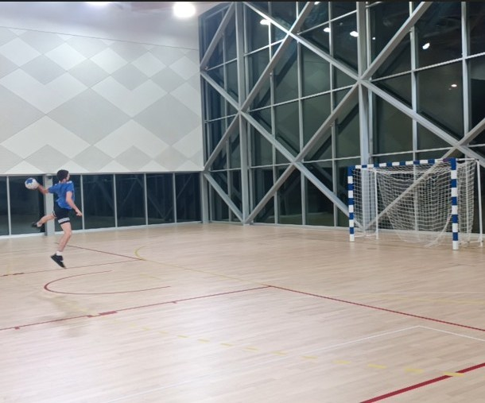

Activités sportives
Football, judo, tennis, handball, musculation — le sport comme fil conducteur
Football, judo, tennis, handball, musculation — le sport comme fil conducteur

Le sport occupe une place importante dans ma vie depuis l'enfance. J'ai commencé très tôt par le football et le judo, deux disciplines qui m'ont appris la rigueur, le respect et l'esprit d'équipe dès le plus jeune âge.
Le tennis en club a ensuite pris une grande place dans mon parcours sportif, un sport que j'ai pratiqué intensément et qui m'a apporté concentration, régularité et gestion de l'effort sur la durée.
Pour poursuivre aujourd'hui sur du handball dans le club de mon IUT et sur de la musculation, deux activités complémentaires qui combinent performance collective et développement physique individuel.

Le handball est mon sport collectif principal. Il demande réactivité, lecture du jeu et cohésion avec les coéquipiers, des qualités que j'essaie de développer à chaque entraînement et match.
La musculation vient compléter cette pratique en travaillant la force, l'endurance et la prévention des blessures. C'est aussi un espace de progression individuelle où les résultats se mesurent sur le long terme.
La pratique sportive depuis l'enfance m'a forgé des valeurs qui se retrouvent dans mon approche des études et des projets : persévérance, capacité à encaisser l'échec et à rebondir, et goût de la progression.
Les sports collectifs comme le football et le handball m'ont appris à travailler en équipe, à communiquer efficacement et à m'adapter aux imprévus, des compétences directement transposables dans un environnement professionnel.
Enfin, le sport reste pour moi un équilibre essentiel entre les exigences académiques et la vie personnelle, un moyen de rester concentré, motivé et en bonne santé physique et mentale.